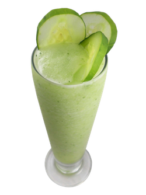
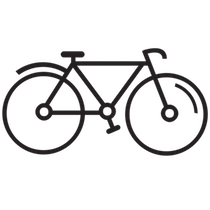

Nutrition, Health and Exercise are my passion.
You are what you eat. I believe in the importance of consuming organic and nutrition-rich foods that are good for my body.
The processed foods that are available in today's world are not what they used to be. With the growing population, foods are being pumped with unwanted hormones, GMO's, and other artificial substances in order to keep up with the demand.
These sustances are harmful for our bodies and all the negative long-term effects they could have are not yet known by anyone. Because of this, it is important to stay healthy and eat as heathy as one can.
jugo verde
"Jugo verde", or green juice, is an important part of my everyday routine. I drink one every morning and one every night. Here is the recipe I created for this nutrient filled power drink:
- 2 cups water
- kale
- spinach
- cucumber
- celery
- ginger
- orange
- pineapple
- lime
Exercise Routine
Exercise is also an impotant part of my daily life. I belive it is imporant to stay active, not only for physical health, but for mental health.
Exercise is proven to relieve stress and help the mind stay clam, alert, and healthy. I try to engage in some sort of exercise at least 5 days a week, for at least 45 minutes. My favorite forms of exercise are the following:
- indoor cycling
- running/walking outdoors
- high interval training classes
- pilates
- yoga
- strenth training